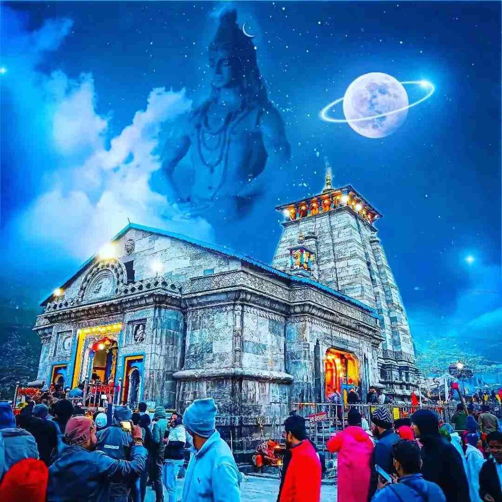
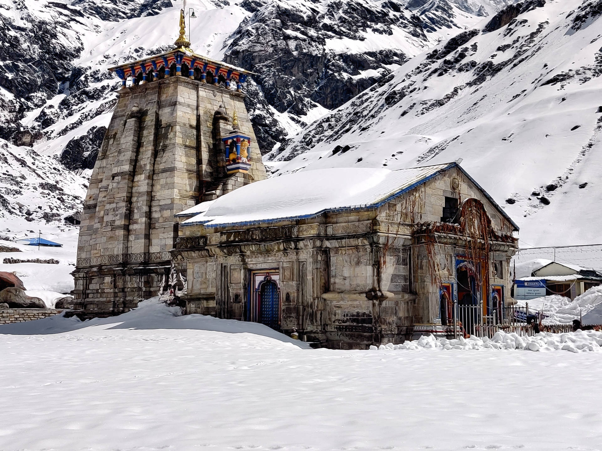
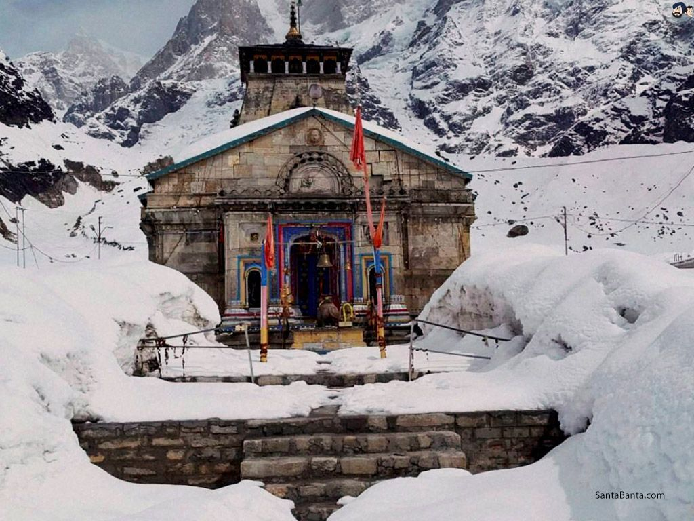
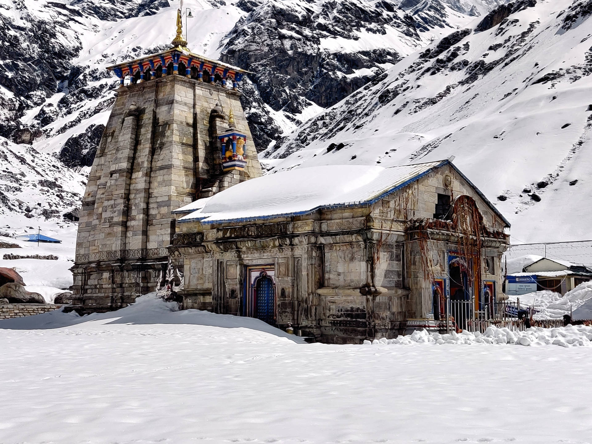
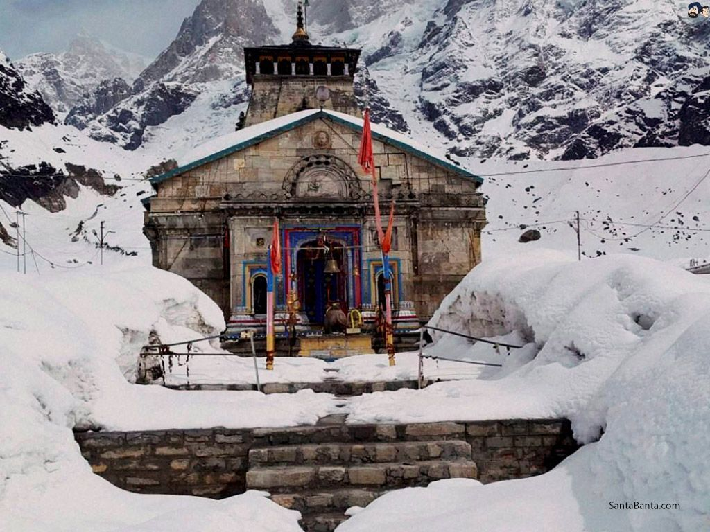
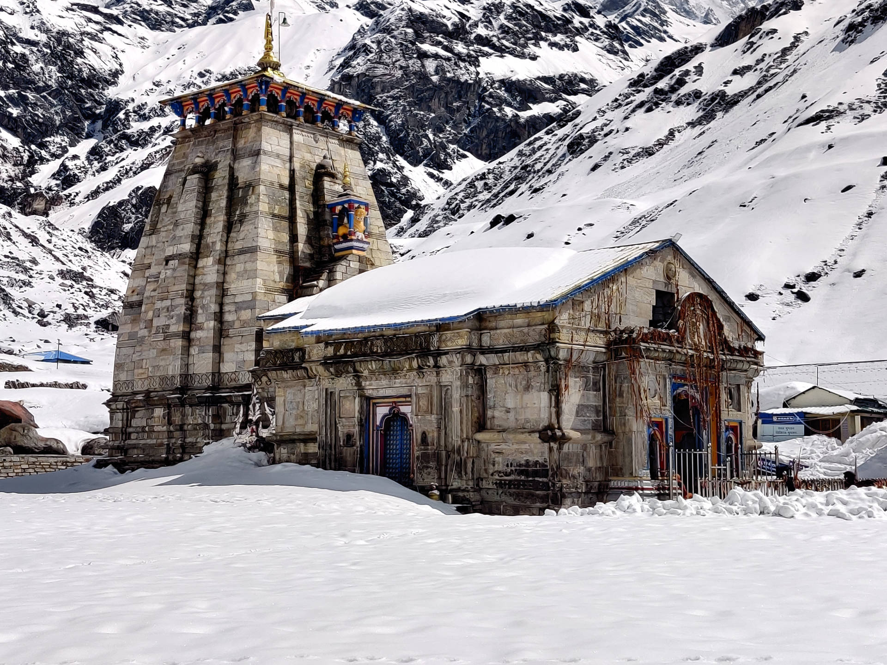
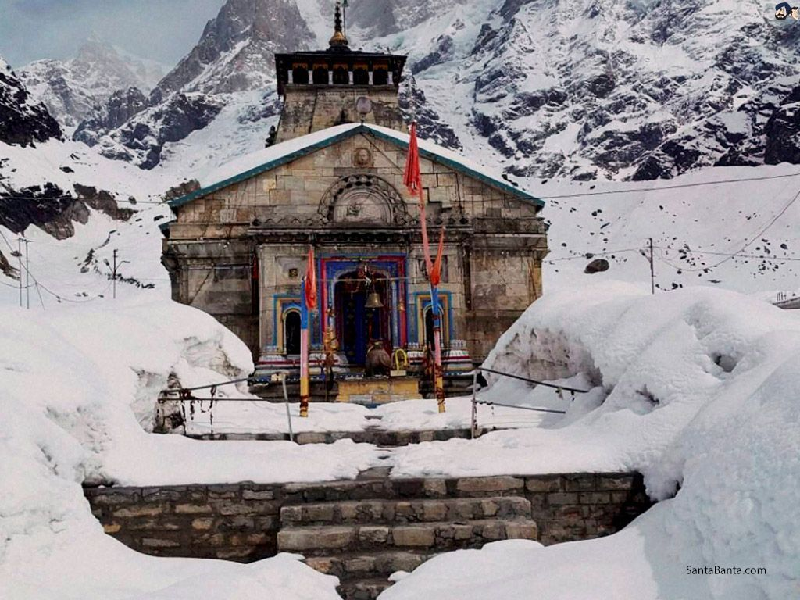
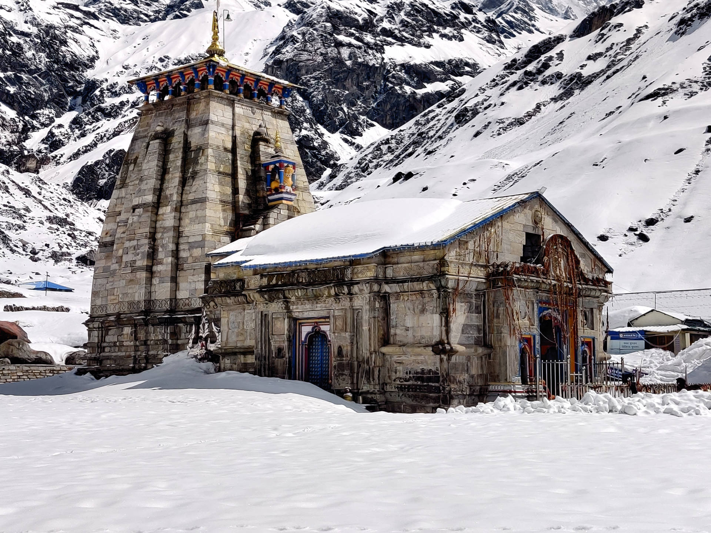
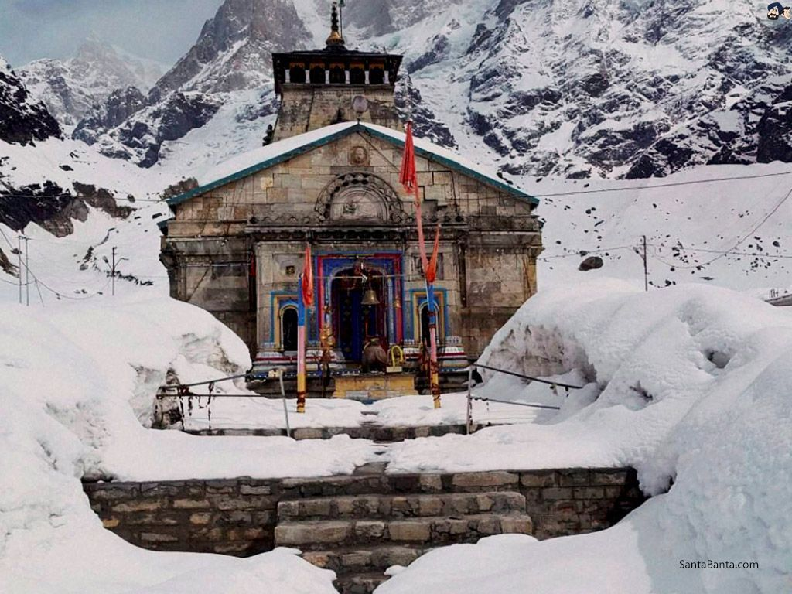

Image Gallery

 





The Sacred Temple in the Himalayas
Kedarnath is one of the most revered pilgrimage sites in India, located in the Garhwal Himalayan range of Uttarakhand. The Kedarnath Temple, dedicated to Lord Shiva, is believed to have been built by the Pandavas and later renovated by Adi Shankaracharya in the 8th century.
The temple stands as a testimony to India's rich mythological history, with mentions in the Mahabharata. It is part of the Panch Kedar, a group of five sacred Shiva temples in the region.
The Kedarnath Temple is constructed using large, gray stone slabs in a unique mountain architectural style. Despite its remote and harsh location, the temple has withstood the test of time.
Kedarnath is one of the twelve Jyotirlingas and is considered the most remote and important of them all. Pilgrims believe that a visit to Kedarnath brings salvation.
It is also part of the Char Dham Yatra, which includes Badrinath, Gangotri, and Yamunotri. Devotees undertake arduous treks to reach the temple, reflecting their deep faith and devotion.


Helicopter services are also available for those unable to trek.